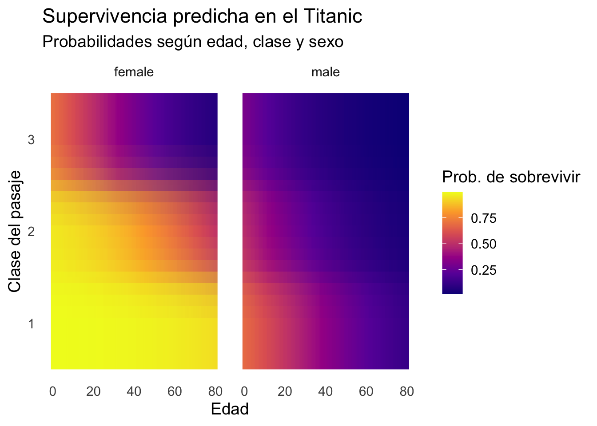

# A tibble: 9,292 × 5
...1 person genero politico agno_nacimiento
<dbl> <chr> <chr> <dbl> <dbl>
1 1 Gabriela Mistral femenino 0 1889
2 2 Michelle Bachelet femenino 1 1951
3 3 Isabel Allende femenino 0 1942
4 4 Violeta Parra femenino 0 1917
5 5 Nicole femenino 0 1977
6 6 Coté de Pablo femenino 0 1979
7 7 Camila Vallejo femenino 1 1988
8 8 Margot Honecker femenino 1 1927
9 9 Xiye Bastida femenino 0 2002
10 10 Leonor Varela femenino 0 1972
# ℹ 9,282 more rowsSOL3070 Análisis de Datos Categóricos
Información
Ponderación: 25% de la nota final del curso.
Bonus: Responder la pregunta bonus NO es un requisito necesario para obtener puntaje completo. Responder incorrectamente la pregunta bonus no afectará negativamente la nota obtenida, pero responderla correctamente mejorará la nota obtenida en un máximo de 0.5 puntos (o en la cantidad necesaria para obtener nota máxima si la nota original fuera superior a 6.5)
Introducción
En este trabajo usarán datos extraidos de 9.303 biografías de chilenos disponibles en Wikipedia (en hasta 160 lenguas). La información de este fue recopilada en el proyecto de investigación “Social Memory about Chileans in Wikipedia”, financiado por Wikimedia Research Fund. Si usas estos datos, por favor cita la siguiente publicación: Beytía, P., Rojas, C. & Cruz, C. (2024). Social memory about people from a country. The case of notable Chileans in Wikipedia. Wiki Workshop 2024.
Dado que contar con una biografía en Wikipedia es un indicador de prominencia social, utilizaremos esta subpoblación de individuos “notables” para modelar la probabilidad de que una persona destacada se dedique a la política, considerando como variables predictoras su género y año de nacimiento.
Los datos están disponibles en el repositorio del curso para ser descargados.
Datos
Visualización rápida de la base de datos:
Ejercicios
I. LPM
Calcula las probabilidades de que un hombre con biografìa en wikipedia sea político \((p_h)\) y de que una mujer con biografìa en wikipedia sea política \((p_m)\). Calcula la diferencia entre ambas proporciones.
Usa un LPM para estimar la probabilidad de ser político en función del género. Escribe la ecuación de regresión correspondiente y presenta un
summary()de los resultados. Explica el significado estadístico de cada coeficiente y su conexión con los resultados de la pregunta anterior.Usa un LPM para estimar la probabilidad de ser político en función del género, controlando por el año de nacimiento de los individuos. Escribe la ecuación de regresión correspondiente y presenta un
summary()de los resultados. Explica el significado estadístico de cada coeficiente y provee una breve interpretación sustantiva.De acuerdo al modelo estimado en la pregunta anterior, ¿cuál es el efecto marginal del “año de nacimiento” sobre la probabilidad esperada de ser político?
En base al modelo usado en I.3., calcula las probabilidades esperadas de ser políticos para un hombre y una mujer que cuentan con una biografía en wikipedia y nacieron en 1973. Expresa formalmente las ecuaciones correspondiente a estas predicciones.
Agrega una interacción entre
generoyagno_nacimientoal modelo estimado en I.3. Escribe la ecuación de regresión y presenta unsummary()de los resultados. Interpreta el efecto del año de nacimiento estimado en términos estadísticos y sustantivos.
II. REGRESIÓN LOGISTICA
Calcula la odds de que un hombre con biografìa en wikipedia sea político \((\text{odd}_h)\) y de que una mujer con biografìa en wikipedia sea política \((\text{odd}_m)\). Calcula el ratio entre ambas odds (hombre vs mujer) e interpreta el odds ratio resultante.
Usa una regresión logística para estimar la log-odds de ser político en función del género. Escribe la ecuación de regresión correspondiente y presenta un
summary()de los resultados. Explica el significado estadístico de cada coeficiente y su conexión con los resultados de la pregunta anterior.Usa una regresión para estimar las log-odds de ser político en función del género, controlando por el año de nacimiento de los individuos. Escribe la ecuación de regresión correspondiente y presenta un
summary()de los resultados. Explica el significado estadístico de cada coeficiente y provee una breve interpretación sustantiva.De acuerdo al modelo estimado en la pregunta anterior, ¿cuál es la fórmula para el efecto marginal del “año de nacimiento” sobre la probabilidad esperada de ser político?
De acuerdo al modelo estimado en II.3., ¿cual es el efecto marginal del año de nacimiento sobre la la probabilidades esperadas de ser políticos para un hombre y una mujer que cuentan con una biografía en wikipedia y nacieron en 1973. Expresa formalmente las ecuaciones correspondiente dichos efectos. Compara los resultados con la respuesta dada en I.4.
III. BONUS:
Agrega una interacción entre
generoyagno_nacimientoal modelo estimado en II.3 y presenta unsummary()de los resultados.Reproduce el siguiente gráfico que muestra – en base a los LMP y logit más complejos (con interacción) – las probabilidad predichas de ser polìtico para hombres y mujeres con biografìa en wikipedia nacidos entre los años 1810 y 2024. Compara principales resultados arrojados por ambos modelos.

- ¿En la regresión logística, cuál es el mayor efecto marginal posible de año de nacimiento sobre la probabilidad de ser político para hombres y mujeres? Compara con el respectivo efecto marginal en el LPM.